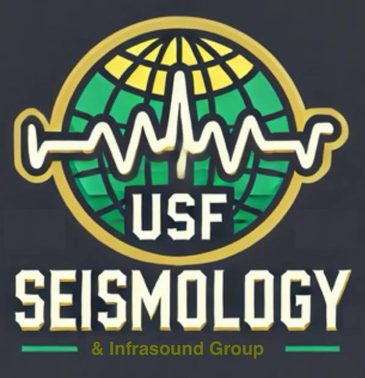
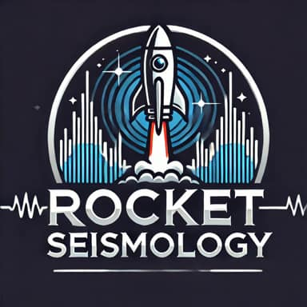

A key focus of the USF Seismology and Infrasound Group is Environmental Seismology in Florida. We aim to understand and monitor the dynamic subsurface and atmospheric processes of the state, utilizing state-of-the-art seismic, infrasound, and hydrological techniques. By leveraging advanced 4-D tomography to map and monitor aquifers, we will provide critical insights into groundwater resources, informing sustainable management of Florida's water supply.
The program will also focus on river monitoring, using seismic sensors to track water flow, sediment movement, and environmental changes, contributing to flood risk assessment and water quality management. In addition, seismic and infrasound techniques will be developed to track and quantify hurricanes, and thunder.
Another key component will be investigating the effects of quarry blasts and sonic booms on residential neighborhoods, providing data to inform local regulations and reduce community impact. Finally, we also explore the potential of using rocket launches as active seismic sources to probe subsurface geology, expanding our understanding of what lies beneath Florida's surface.
Through cutting-edge research and technological innovation, Environmental Seismology in Florida will enhance our understanding of environmental and man-made seismic events, inform disaster preparation efforts, protect communities, and ensure the sustainable management of Florida’s natural resources.
|  | |
 |